Наука · журнал «ДентАрт» 2025 №1
Принципи препарування зубів у біологічно орієнтованій техніці в ортопедичній стоматології
PRINCIPLES OF TOOTH PREPARATION IN BIOLOGICALLY ORIENTED TECHNIQUE IN ORTHOPEDIC DENTISTRY
Ортопедичне лікування коронкової частини зубів, уражених карієсом і його ускладненнями, супроводжується їх значним препаруванням, особливо при естетичному протезуванні. Також потрібно приділяти увагу м'яким тканинам, які в майбутньому будуть контактувати з реставрацією. Останнім часом, спираючись на новітні технології в галузі стоматології, для естетичного протезування широко застосовуються ортопедичні реставрації або реставрації – вестибулярні напівкоронки з керамічних чи полімерних матеріалів.
Мінімальна реакція м'яких тканин на керамічні реставрації, мабуть, є однією з найбільших переваг таких конструкцій, особливо коли зуби препаруються у біологічно орієнтованій техніці. Можливість створення абсолютно гладенької поверхні ортопедичної конструкції дозволяє підтримувати нормальний стан тканин пародонта та забезпечувати задовільну гігієну ротової порожнини на тривалий період.
Реакція тканин пародонта була досліджена багатьма авторами. Деякі з них стверджують, що металокерамічні реставрації та вініри не відрізняються за частотою і ступенем вираженості реакцій з боку тканин пародонта, інші говорять про менш виражену реакцію на вініри та керамічні реставрації. Gresnigt M., Ozcan M. (2011) визначили, що після виготовлення керамічних вінірів збільшується протік ясенної рідини і знижується індекс зубного нальоту та життєздатність бактерій у зубній бляшці.
Високочутливим методом оцінки функціонального стану тканин пародонта є біохімічні дослідження активності вмісту маркерів запалення та перекисного окиснення ліпідів, утім, досі особливості гомеорезису ротової рідини у пацієнтів з установленими вінірами, керамічними коронками та реставраціями досконало не вивчалися. Особливо це стосується м'яких тканин, які контактують з реставрацією, їх подальшої відповіді на втручання, адаптації під нову форму та формування профілю.
Метою дослідження була оцінка ефективності методу препарування зубів у біологічно орієнтованій техніці у пацієнтів, яким зроблено естетичне протезування із використанням вінірів та керамічних реставрацій, і відповідної реакції м'яких тканин на втручання.
Матеріали і методи
Дослідження зроблене протягом 2020–2024 років на базі стоматологічної клініки Одеського медичного інституту Міжнародного гуманітарного університету.
Основне завдання, яке стояло перед нами, – яким чином досягти прогнозованого довгострокового естетичного результату при максимальному збереженні структур, які відповідають за функцію та естетику. Одне із найпоширеніших ускладнень при незнімному протезуванні – запалення з подальшою рецесією ясенного краю, що негативно впливає на психологічний стан пацієнта. Але, використовуючи спосіб препарування зубів у біологічно орієнтованій техніці, як лікар, так і зубний технік (а вони повинні тісно співпрацювати) мають можливість впливати на м'які тканини, які оточують зуб, змінювати положення та форму, відновлювати зуб.
Основна причина міграції ясенного краю – це помилки на етапі препарування та ретракції ясенного краю, а також порушення біологічної товщини – край реставрації чинить тиск на м'які тканини. Використовуючи концепцію біологічно орієнтованої техніки препарування, ми можемо перенести анатомічну шийку зуба на ортопедичну конструкцію, зробивши так звану пародонтальну шийку на керамічній реставрації. Це дає змогу вільно працювати з м'якими тканинами. У подальшому, враховуючи фактор ідеальної гладенької поверхні кераміки, м'які тканини будуть адаптуватися і формувати новий контур біля керамічної реставрації. Таким чином, штучне цементно-емалеве з'єднання формується саме там, де воно було природно запрограмоване, а відкрита частина кореня зуба ізолюється керамічною реставрацією, що створює естетично привабливий ефект. Тобто клінічно на зубі немає нового надмірного контуру, який буде візуально «перенавантажувати» коронку і сприяти надмірному тиску на ясенний край (фото 1). Як бачимо на фото, підказки нам дає сама природа – зуб 23 має майже таку саму форму.
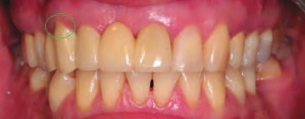
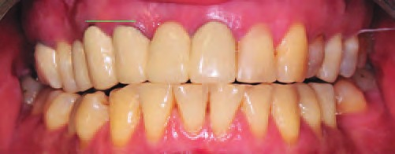
Перед початком препарування слід врахувати побажання пацієнта, а також лікар повинен поінформувати його про майбутню роботу і про неможливість відновлення зубоясенного краю на рівень зубів, що стоять поряд (фото 2). Але контур прорізування зуба, а також м'які тканини матимуть більш природний та естетичний вигляд.
Зубний технік може змоделювати новий контур прорізування зуба, при цьому не порушуючи крайове прилягання коронки та біологічну товщину краю коронки (фото 3). У подальшому м'які тканини будуть формуватися за новою формою на пришийковій ділянці коронки зуба.
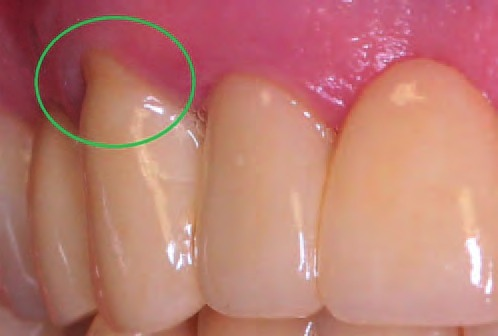
При створенні нового дизайну коронки зуба особливо важлива техніка препарування зуба, а саме формування протезного поля у пришийковій ділянці. Тому тут постає питання, яку техніку використовувати: з уступом, так звану горизонтальну техніку, чи без нього – вертикальну, або ВертиПреп. Якщо лікар має добрий візуальний контроль препарованої зони для створення якісного уступу, а головне, може сформувати чіткий його край, який буде бачити зубний технік, то питань не виникає. Горизонтальне препарування можна використовувати, коли анатомічна та клінічна коронки співпадають, а тканини пародонта без ознак запалення. Якщо ж такої можливості немає через ті чи інші причини – рухливість зубів (фото 4 а), міграцію ясенного краю в бік апікальної зони, то перевагу в препаруванні надаємо безуступному препаруванню (фото 4 б). Це консервативніший тип препарування, який передбачає менш інвазійне втручання у тверді тканини зуба.
Основною клінічною відмінністю горизонтального препарування від вертикального є те, що в першому випадку межу ортопедичної конструкції встановлює лікар. Цей уступ відтворюється на моделі, а потім моделюється коронка з постійною межею. У випадку травмування м'яких тканин на етапі зняття відбитка з подальшою рецесією ясенного краю зуб потрібно буде допрепаровувати і робити нову конструкцію (фото 5 а, б). У другому випадку працює зубний технік, який орієнтується на стан і об'єм м'яких тканин, висоту прикріплення зубоясенної зв'язки. Тому дуже важливо надати йому якісну картинку стану протезного поля та м'яких тканин.
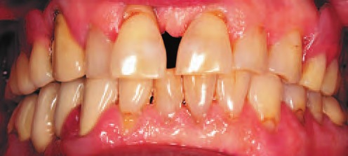
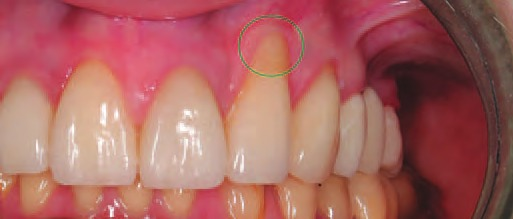
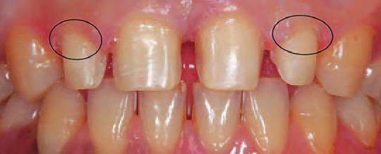
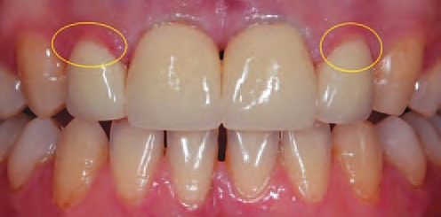
В обстеженні взяли участь 42 пацієнти, яким робили естетичне протезування із застосуванням вінірів, керамічних реставрацій та коронок.
Усі конструкції встановлював один лікар-ортопед зі строгим дотриманням принципів методики препарування, ретракції м'яких тканин, зняття відбитків та протоколу фіксації. Після попередньої підготовки, що включала профілактику й заміну старих композитних реставрацій, зняття старих ортопедичних конструкцій, зуби препаровані у біологічно орієнтованій техніці для керамічних реставрацій. У пришийковій ділянці межа препарування відповідала рівню ясенного контуру або була нижче нього, якщо це стосувалося переробки старих ортопедичних конструкцій. Ясенний край за необхідності коригували полум'яподібним бором з подальшим зняттям навантаження за допомогою тимчасової конструкції (фото 6 а, б, в).
На етапі препарування бор контактує з твердими тканинами зуба та з м'якими тканинами, знімаючи шар епітелію з останніх. Таким чином формування нового контуру йде швидше і прогнозовано, по тимчасовій коронці. Глибину занурення в під'ясенний край контролює зубний технік, але не глибше 0.5–1.0 мм, враховуючи біологічну товщину (фото 7 а, б). Така техніка препарування дає змогу відтворити простір, який у подальшому заповнюється згустком крові, що утворюється при кровотечі. Також, коли пацієнт має достатній об'єм м'яких тканин, можна сформувати овоїд на місці відсутнього зуба за допомогою тимчасової конструкції (фото 6 г). Внутрішньоборозенковий край тимчасової коронки утримує ясенний край по колу та формує новий дизайн зубоясенної лінії.
У біологічно орієнтованій техніці препарування край ортопедичної коронки є кінцевим пунктом втручання, який може бути вкороченим чи подовженим як на постійній конструкції, так і на тимчасовій. Це залежить від глибини ясенної борозенки, але в жодному разі він не має втручатися в епітеліальне прикріплення. Потрібно це для адаптації форми і майбутнього профілю м'яких тканин.
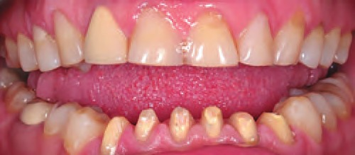
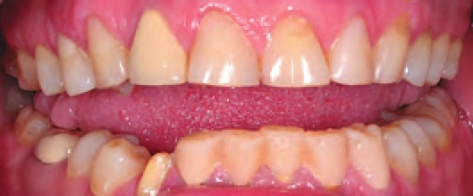
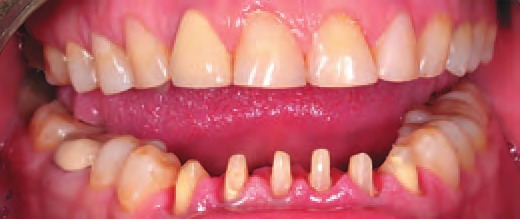
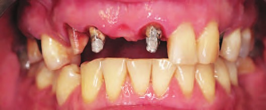
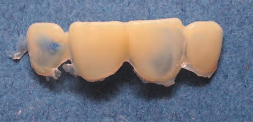
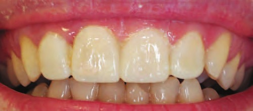
Після препарування, полірування та ретракції ясен (фото 8 а, б, в) знімаємо відбитки, використовуючи поліефіри (фото 9).
Якщо все зроблено правильно, то лабораторія має всю повноту інформації про м'які тканини та місце розташування уступу або його відсутність (фото 10).
Усі клініко-лабораторні етапи протезування зубів керамічними реставраціями виконували, ретельно дотримуючись загальноприйнятих методів. Для зняття відбитка використовували поліефірний матеріал Impregum. Адгезивну фіксацію постійної реставрації робили на 7–10-у добу після препарування.
Реставрації виготовлялися з використанням однакової кераміки (IPS e.max Press Ivoclar Vivadent) і рефракторного матеріалу (IPS e.max Ceram Ivoclar Vivadent). Внутрішню поверхню вінірів протравлювали 5 % HF протягом 60 секунд, після чого промивали в ультразвуковій ванні з дистильованою водою протягом 10 хвилин для зменшення кількості преципітатів, які негативно впливають на якість адгезивної фіксації.
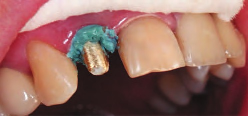
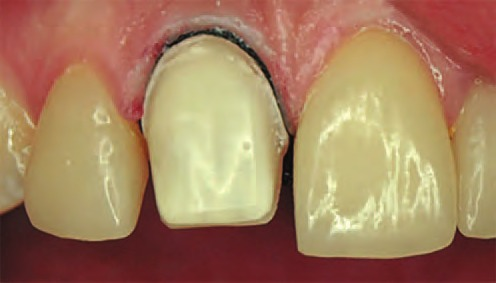
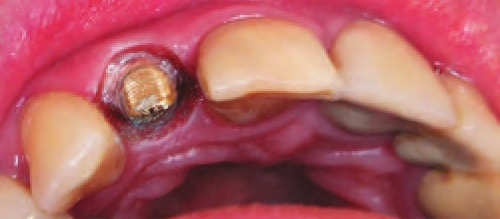
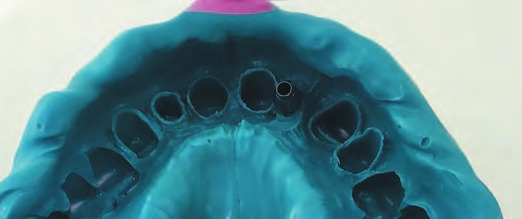
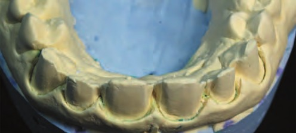
Для фіксації реставрацій використовували RelyX Veneer або RelyX U 200, попередньо ізолювавши зуби рабердамом та обробивши під'ясенну борозенку Astringent Retraction Paste. Препаровані поверхні зуба обробляли 35 % розчином фосфорної кислоти Scotchgel (це стосується вінірів), після чого наносили на них Singlbond universal. Після фіксації керамічних реставрацій за допомогою мінімально абразивних алмазних борів (Goldsteіn Esthetіc Trіmmіng Dіamond Set, Komet) і рясної іригації видаляли надлишки фіксуючого агента (за потреби).
Межу переходу реставрації у тверді тканини зуба полірували алмазною полірувальною пастою і гумовими чашками, а також Sof-Lex Spirals. Остаточну обробку міжзубних поверхонь робили полірувальними смужками Sof-Lex.
Гігієнічний стан ротової порожнини оцінювали за допомогою індексів гігієни ротової порожнини Sіlness-Loe і Stallard. Стоматологічний рівень здоров'я (СРЗ) оцінювали у відповідності з рекомендаціями П. Леуса.
У пацієнтів збирали змішану нестимульовану слину і в ній визначали активність уреази (маркер мікробного осіменіння), активність лізоциму (показник рівня неспецифічного імунітету), активність антиоксидантного ферменту каталази. Лізоцим слини у відсотках активності визначали бактеріолітичним методом Горина та ін. (1971) у модифікації Левицкого й Жигіної. За співвідношенням активностей уреази і лізоциму розраховували ферментативний показник ступеня дисбіозу в ротовій порожнині.
Статистична обробка отриманих результатів провадилася з використанням ліцензійної програми STATІSTІCA 7.0.
Результати
Ознак стоматологічних захворювань та гострого запалення слизової оболонки на момент обстеження не було. Відносно частим явищем були різноманітні естетичні дефекти у вигляді ротації чи дистопії зубів, змін кольору зуба і композитних реставрацій, які не влаштовували пацієнта. До інших нестандартних клінічних ситуацій належали діастеми та треми. Потреба в естетичному протезуванні верхніх зубів існувала у 20 (47,6 %) пацієнтів, нижніх – у 8 (19,0 %), верхніх і нижніх – у 14 (33,3 %).
При оцінці клінічного ефекту застосування керамічних реставрацій під час контрольних візитів їх естетичні параметри (відповідність кольору й контакт із м'якими тканинами) були оптимальними для всіх випадків. У жодному випадку не було гіперчутливості зубів після встановлення реставрацій, також не було міграції та запалення ясенного краю (фото 11 а, б, в).
При оцінці показників гомеорезису було встановлено, що у пацієнтів із встановленими керамічними реставраціями спостерігається парадоксальна реакція зменшення проявів дисбіозу з часом після встановлення цих реставрацій (табл. 1).
Так, рівень уреази через 12 місяців після реставрації зменшився майже вдвічі (з 0,09±0,01 до 0,05±0,007 мккат/л), а рівень лізоциму зріс з 52±7 од/л до 70±9 од/л. Зміни активності каталази були синергічними із динамікою вмісту лізоциму, цей показник поступово зростав протягом усього періоду катамнестичного спостереження – із 0,17±0,01 до 0,27±0,01 мкат/л. Описані зміни були статистично значущими (р<0,05).
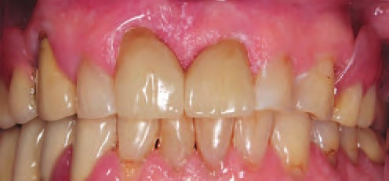
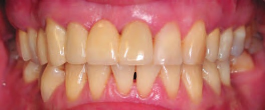
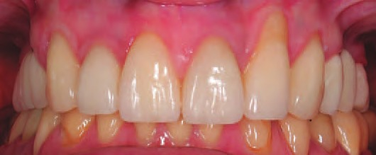
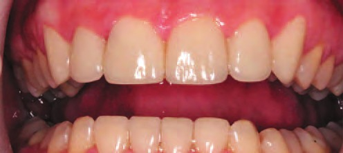
| Показники | До реставрації | Через 1 місяць після реставрації | Через 6 місяців після реставрації | Через 12 місяців після реставрації |
|---|---|---|---|---|
| Уреаза, мк-кат/л | 0,09±0,01 | 0,10±0,01 | 0,08±0,01 | 0,05±0,007 |
| Лізоцим, од/л | 52±7 | 55±6 | 61±6 | 70±9 |
| Каталаза, мкат/л | 0,17±0,01 | 0,19±0,01 | 0,25±0,02 | 0,27±0,01 |
Подальші дослідження показали, що ці зміни тісно корелювали із загальним рівнем гігієни. Іншими словами, після встановлення керамічних реставрацій пацієнти приділяли набагато більше уваги гігієні ротової порожнини. Тобто естетична реставрація виступала у ролі мотивуючого фактора самозберігаючої поведінки (фото 11).
Висновки
- Естетична реставрація дозволяє покращити рівень гігієни ротової порожнини.
- У пацієнтів із встановленими керамічними реставраціями спостерігається зменшення проявів дисбіозу через 6–12 місяців після естетичної реставрації.
- При застосуванні основних принципів препарування зубів у біологічно орієнтованій техніці відсутня міграція ясенного краю у більшості клінічних випадків. Також зростає його стабільність з часом.
Література
- Ittipuriphat I. Anterior space management: interdisciplinary concepts / Ittipuriphat I., Leevailoj C. // J Esthet Restor Dent. – 2013 – Vol. 25(1) – P. 16–30.
- The papillary veneers concept: an option for solving compromised dental situations / Viana P. C., Correia A., Kovacs Z. // J Am Dent Assoc. – 2012 – Vol. 143(12) – P. 1313–1316.
- Strength and thickness of the layer of materials used for ceramic veneers bonding / Mazurek K., Mierzwińska-Nastalska E., Molak R., et al // Acta Bioeng Biomech. – 2012 – Vol. 14(3) – P. 75–78.
- Porcelain veneers: a review of the literature / Peumans M., Van Meerbeek B., Lambrechts P., Vanherle G. // J Dent. – 2000 – Vol. 28(3) – P. 163–177.
- Einfluss der Form des Bruckenkorpers von Verblendbrucken auf die Gingiva und auf das marginale Parodontium / Freesmeyer W. B., Gorus R. // Dtsch Zahnarztl Z. – 1981 – Bd. 36(8) – P. 467–474.
- Featherstone J. D. The caries balance: the basis for caries management by risk assessment / J. D. Featherstone // Oral Health Prev Dent. – 2004 – Vol. 2 Suppl 1. – P. 259–264.
- Gresnigt M. Esthetic rehabilitation of anterior teeth with porcelain laminates and sectional veneers / Freesmeyer W. B., Gorus R. // J Can Dent Assoc. – 2011 – Vol. 77 – b143.
- Изменение микроциркуляции пародонта и пульпы зуба при препарировании под виниры / Куропатова Л. A., Московец О. Н., Лебеденко И. Ю. // Одонтопрепарирование: Материалы науч.-практ. конф. / МГМСУ. – М., 2003. – С. 74–76.
- Изменение показателей кровотока пульпы и порогов болевой чувствительности твердых тканей зубов при ортопедическом лечении винирами / Куропатова Л. А., Московец О. Н., Лебеденко И. Ю., Рабинович С. А. // Пути совершенствования последипломного образования специалистов стоматологического профиля: Актуал. проблемы ортопед. стоматологии и ортодонтии. – М., 2002. – С. 183–185.
- Реакция сосудов пульпы и пародонта на препарирование твердых тканей зубов для изготовления керамических виниров / Куропатова Л. А., Ишмухаметова Е. М., Лебеденко И. Ю. // Актуальные проблемы стоматологии: Сб. тр. под ред. проф. И. Ю. Лебеденко / МГМСУ. – М., 2002. – С. 110–113.
- Гюрель Г. Керамические виниры. Искусство и наука. М., Азбука, 2007. – 519 с.
- Gresnigt M. M., Kalk W., Ozcan M. Clinical longevity of ceramic laminate veneers bonded to teeth with and without existing composite restorations up to 40 months / Gresnigt M. M., Kalk W., Ozcan M. // Clin Oral Investig. – 2013 – Vol. 17(3) – P. 823-832.
- Леус П. А. Профилактическая коммунальная стоматология. Медицинская книга, М., 2008. – 444 с.
- Левицкий А. П. Лизоцим вместо антибиотиков / А. П. Левицкий − Одесса: КП ОГТ, 2005. − 74 с.
- Пат. № 16048 Україна. Спосіб оцінки дисбактеріозу порожнини рота / Левицький А. П., Макаренко О. А., Селіванська І. О., Дєньга О. В., Почтар В. М., Гончарук С. В.; Опубл. 17.07.2006. − 2006, Бюл. № 7.